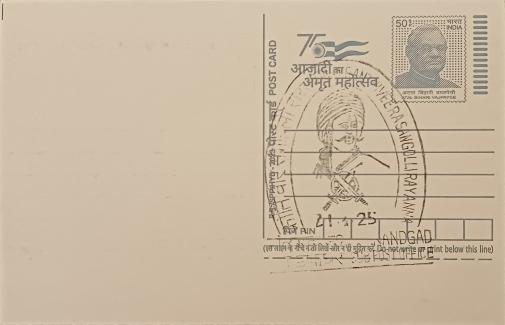

Krantiveera Sangolli Rayanna
ಕ್ರಾಂತಿವೀರ ಸಂಗೊಳ್ಳಿ ರಾಯಣ್ಣ


Krantiveera Sangolli Rayanna was born on 15 August 1798 in the village of Sangolli, near Belagavi, into a family in the service of the Desai chieftains of Kittur, and it is from this native village that his popular name derives. He rose through the ranks of the Kittur state's armed forces to become a senior commander under Rani Kittur Chennamma, serving in the force that confronted the British East India Company when it invoked the Doctrine of Lapse to annex Kittur in 1824 following the death of the ruling Desai without a surviving biological heir. Unlike many contemporaries who accepted defeat once Chennamma was captured and imprisoned, Rayanna chose to carry the resistance forward on his own initiative, converting a dynastic succession dispute into a sustained armed insurgency against colonial administration across the Belagavi region.
As a historical figure, Rayanna occupies a distinctive place in Karnataka's commemorative landscape as one of the earliest organised rebels against British rule in peninsular India, operating roughly a quarter-century before the wider uprising of 1857. His significance is political and symbolic rather than religious or architectural: he represents localized Kannada resistance to colonial annexation policy, and he is honoured with the title 'Krantiveera', meaning revolutionary hero, a designation that distinguishes him in Karnataka's official commemorations. The state government observes both his birth anniversary on 15 August and his martyrdom day on 26 January as occasions of public remembrance, and he is frequently invoked, alongside Chennamma, as a founding figure of Kannada regional identity and anti-colonial memory.
After Chennamma's capture, Rayanna organised bands of local fighters, drawn in part from marginalised and tribal communities of the Belagavi countryside, and conducted a guerrilla campaign for roughly six years, from 1824 into 1830. His forces burned British government buildings, ambushed company detachments, and raided treasuries, with the broader aim of restoring Chennamma's adopted son, Shivalingappa Rudrasarja, to the Kittur throne in place of British-appointed administrators. This sustained campaign of sabotage and raids made him a persistent security concern for the Bombay Presidency's local officials, who deployed troops repeatedly through the late 1820s to track down his scattered bands across the forested terrain bordering the Western Ghats.
Rayanna's resistance ended through betrayal rather than battlefield defeat: he was captured in early 1830 after being informed upon, reportedly by associates who had been offered rewards or threatened by the colonial administration, and was subsequently tried by a British court. He was sentenced to death and hanged on 26 January 1831 from a banyan tree located a few kilometres from Nandagad village in Belagavi district, an execution carried out publicly as a deterrent to further rebellion. According to local tradition, an associate later planted a banyan sapling at the site of his burial, and the tree that grew from it still stands near Nandagad, marking the spot now locally regarded as his resting place.
A small shrine and an Ashoka Stambha, a commemorative pillar modelled on the Ashokan style, were subsequently erected near the execution site at Nandagad, and the location has since developed into a memorial precinct maintained by the state government and visited during the annual martyrdom observance each January. A separate, larger memorial and museum complex dedicated to Rayanna has also been developed in his native village of Sangolli, reflecting continued state investment in sites associated with his life and death. The postal pictorial cancellation issued at Nandagad SO draws directly on this local memorial geography, giving philatelic form to a site whose primary identity remains that of a modest rural execution ground turned pilgrimage point for visitors tracing Karnataka's early resistance history.
| Date of Introduction | January 10, 2025 |
|---|---|
| Address | Sub Postmaster, |
| Nandgad SO, | |
| Belagavi (dt.), Karnataka - 591120. |